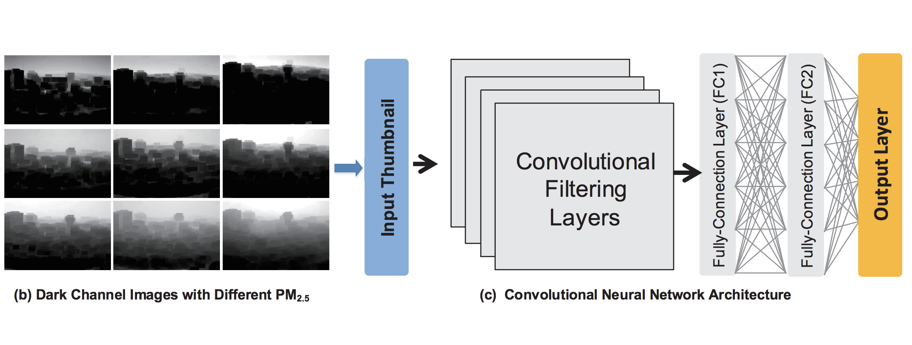
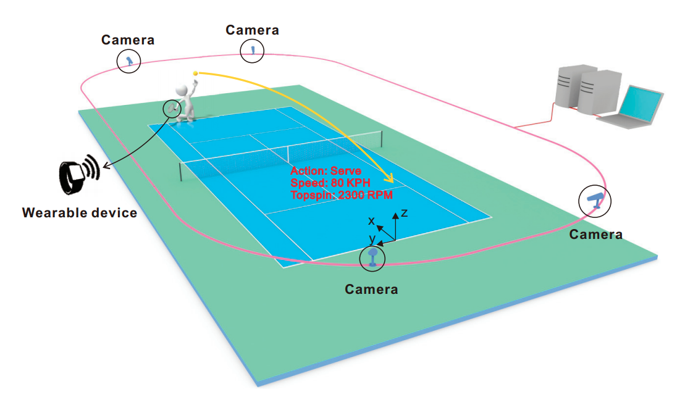
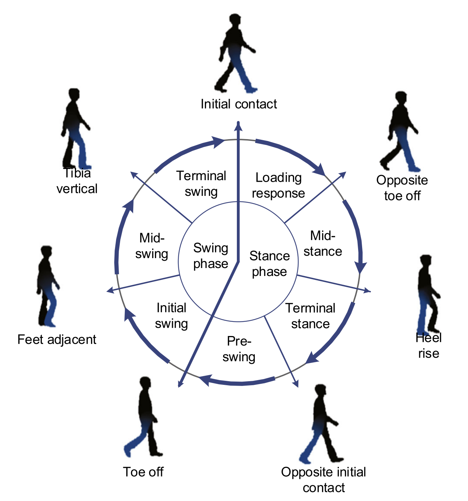
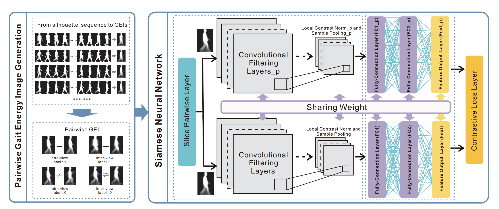
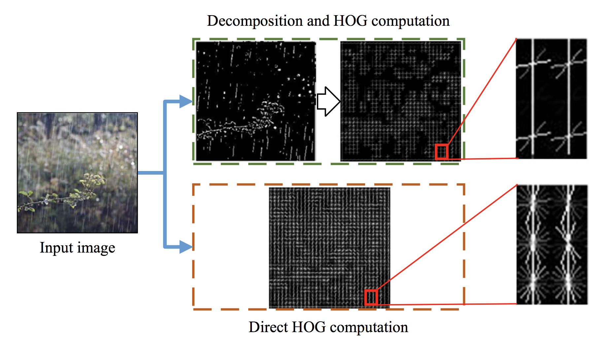
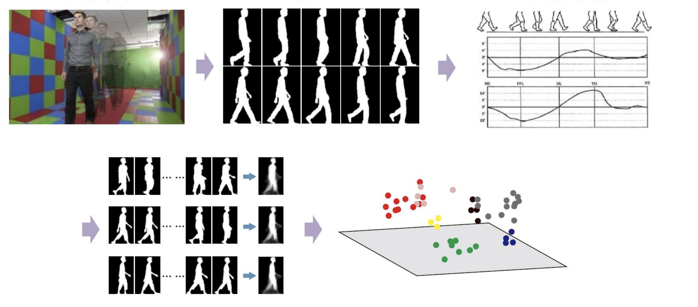
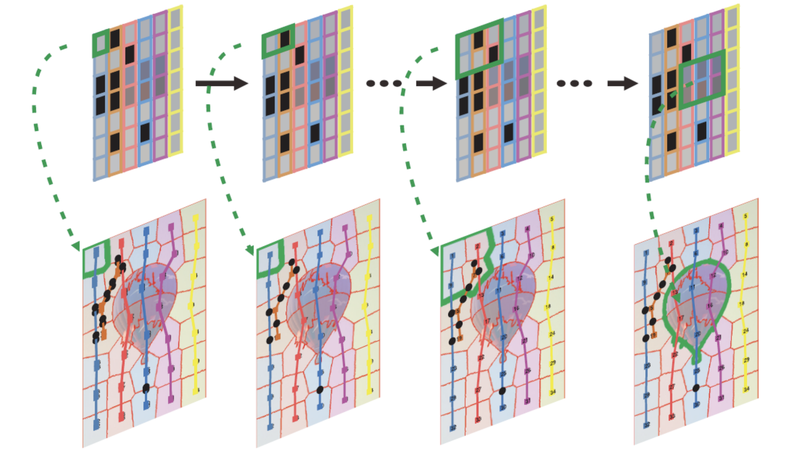

I am a Ph.D. student in the Department of Computer Science and Engineering at The Ohio State University, working with Wei-Lun Harry Chao and Dong Xuan. I also work closely with Chunyi Peng (now at Purdue). Before coming to OSU, I received my M.S. and B.Eng. degrees from Beijing University of Posts and Telecommunications and Tianjin University, respectively. My hometown is Huanggang, China.
My primary research interests are in machine learning and its applications to computer vision and multimedia content analysis. I also do research on building multi-sensor cyber-physical systems over new wireless (e.g., vision and sound) to real-world applications, mostly from a data-driven perspective.
|  |
Third-Eye: A Mobilephone-Enabled Crowdsensing System for Air Quality Monitoring Liang Liu, Wu Liu, Yu Zheng, Huadong Ma, Cheng Zhang ACM International Joint Conference on Pervasive and Ubiquitous Computing (UbiComp/IMWUT), Singapore, Oct 2018 Paper · iOS APP · Android APP |
|  |
MV-Sports: A Motion and Vision Sensor Integration-Based Sports Analysis System Cheng Zhang, Fan Yang, Gang Li, Qiang Zhai, Yi Jiang, Dong Xuan IEEE International Conference on Computer Communications (INFOCOM), Honolulu, HI, USA, Apr 2018 Paper · Slides · Project |
|  |
Learning Efficient Spatial-Temporal Gait Features with Deep Learning for Human Identification Wu Liu, Cheng Zhang, Huadong Ma, Shuangqun Li Neuroinformatics, Feb 2018 Paper |
|  |
Siamese Neural Network based Gait Recognition for Human Identification Cheng Zhang, Wu Liu, Huadong Ma, Huiyuan Fu IEEE International Conference on Acoustics, Speech and Signal Processing (ICASSP), Shanghai, China, Mar 2016 Paper · Code&Model · Slides · Poster |
|  |
Scene-Free Multi-Class Weather Classification on Single Images Zheng Zhang, Huadong Ma, Huiyuan Fu, Cheng Zhang Neurocomputing, May 2016 Paper · Dataset |
|  |
Research on Key Techniques of Gait Recognition based on Deep Learning Cheng Zhang Master thesis (in Chinese), June 2016 Paper · Slides |
|  |
Minimum Topological Discrepancy Grid of Superpixels for Fast Object Localization Cheng Zhang Undergraduate thesis (in Chinese), June 2013 Paper · Slides |
Intern at Fuji Xerox Palo Alto Laboratory (FXPAL), CA, 2019.5 ~ 2019.8
Intern at DeepCode Robotics, Shanghai, 2017.5 ~ 2017.8, 2018.5 ~ 2018.8
Intern at Multimedia Team (currently DAMO academy), Alibaba, Beijing, 2015.7 ~ 2015.9
CSE 1222: Introduction to Computer Programming in C++, Instructor, Spring 2019, OSU
CSE 4471: Information Security, GTA, Fall 2018, OSU
CSE 5432: Mobile Handset Systems and Networking, GTA, Fall 2018, OSU
Computer Graphics, GTA, Fall 2015, BUPT
Updated on May 2019